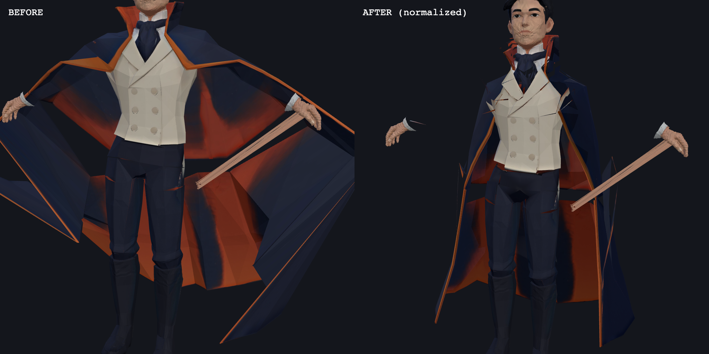
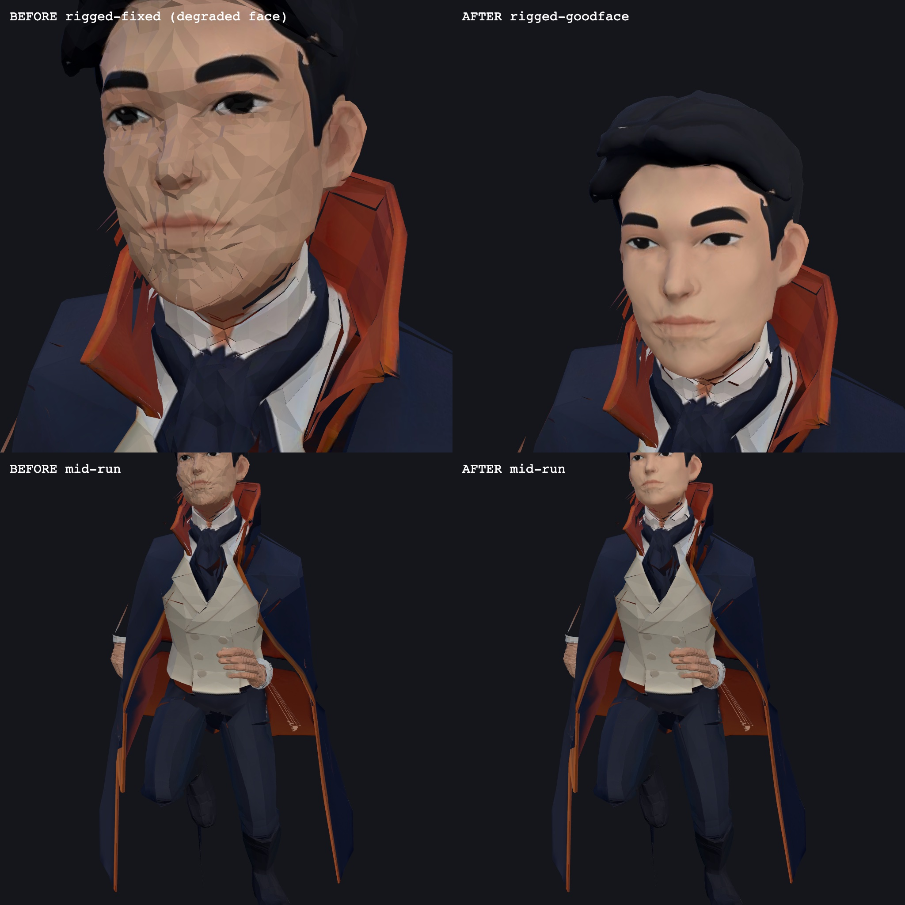
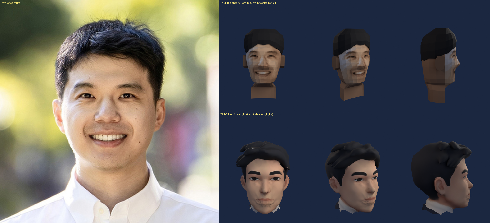

What a real DCC adds to the generated pipeline. Two exhibits: Blender as the
repair shop for an AI-generated, auto-rigged mesh — and Blender as the whole pipeline,
a head modeled from nothing but the portrait.
1 · Blender cleans up Tripo
drag to turn him · he keeps running
The cleaned-up rig, running. Two Blender surgeries on the auto-rigged
Tripo mesh (Make-It-Animatable + a stock Mixamo run): the cloak's
vertex weights — which the auto-rigger had bound to the arms, so it winged open like a
tent on every stride — were rebuilt onto the spine chain so it hangs and swings from the
body; and the good face from the static Tripo mesh was transplanted onto the animated
rig's head with sub-millimetre UV alignment, replacing the smeared face the rigging pass
had left him.
2 · Blender from scratch
drag to turn the head · slow turntable
The from-scratch head. No generator anywhere in this one: modeled
entirely in Blender from the single portrait — 1,202 triangles, likeness painted on by
camera projection of the portrait itself. Honest note: it reads front-only. A projection
carries no side data, so the likeness holds straight-on and thins out as the turntable
carries him past three-quarter.
3 · The evidence
Stills from the review passes. Click any image to enlarge.

The cloak weight rebuild · the wide-arm test pose, before and after.
Left: the auto-rig's weights — arms out drags the whole cloak with them. Right: the
Blender normalizer's weights, rebuilt onto the spine — the cloak stays hung from the
shoulders while the arms move freely.

The head transplant · the animated rig's face, before and after.
Left: the face the auto-rig pass shipped with. Right: the static Tripo mesh's good face
transplanted onto the rig — same UV layout, sub-millimetre alignment, no seam at the
collar.

From-scratch vs. Tripo · the same four bearings, both heads.
1,202 hand-built triangles against the generator's output — the Blender head wins the
front view it was projected from and loses everywhere the portrait couldn't see.